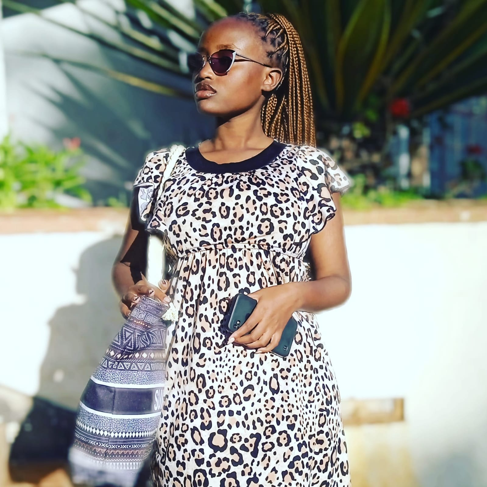

Career objectives
To become a woman in technology and work in a reputable company that will utilize my skills, while presenting new work challanges and continuous growth opportunity in the technology sector as I help attain growth in Science and Technology.
Personal Profile
Great leadership skills, goal oriented, great communication skills, team player, flexible, time manager and self motivated.
Goal-oriented and always eager to learn, good at following instructions, diligent and knowledgeble in C, html, CSS. Great with microsoft office packages.
Work Experience
February 2023: Voluntary
Multimedia University: I am currently part of the Multimedia Science Association where I teach a group of students how to code.
Educational background
september 2022 to present: Multimedia University of Kenya
Bachelor of Science in Applied Physics and Computer Science.
January 2018-April 2022: Mbooni Gilrs' Highschool
Kenya Certificate of Secondary Education (KCSE)
Certifications:
ALX software egineering certificate: ongoing
YASA cerificate for completing girls in ICT computer programming.
Trainings
March 2023 to date
Introduction to android development with kotlin.
Interests
Volunteer work: mentorship, give child empowerment
Coding and research
Teaching and learning
Leadership
Referees
Rachel Wawira
Project Manager
Techmind technologies ltd
Nairobi
Email:
rachelmaganda@gmail.com
Mobile Phone: +254723225453
Mrs. Joyce Thairu
Lecturer,
Faculty of Science and Technology
Multimedia University
Email:
jthairu12@gmail.com
mobile phone: +254733368974